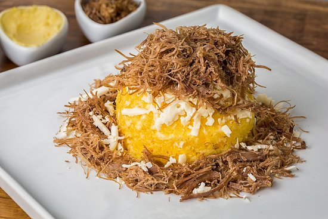
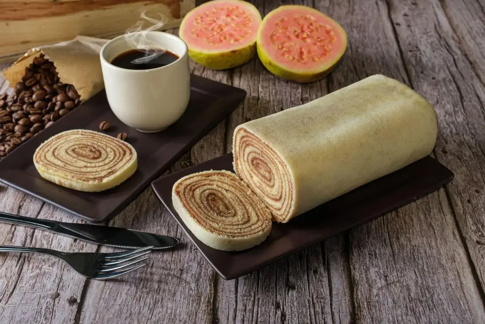
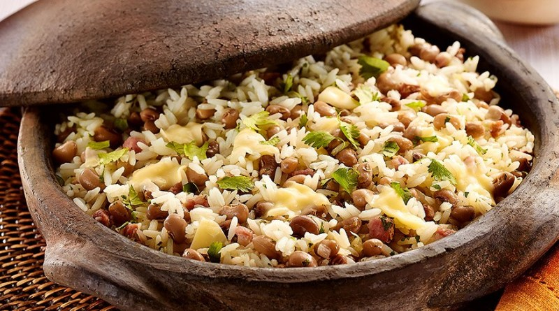
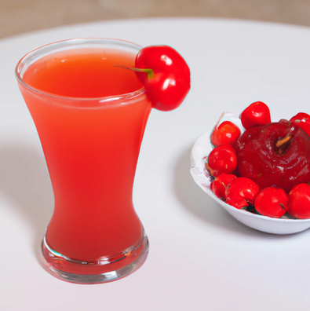
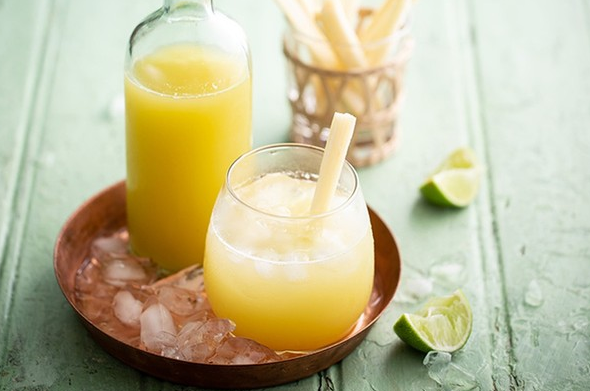
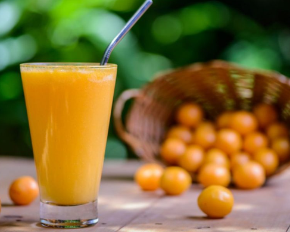
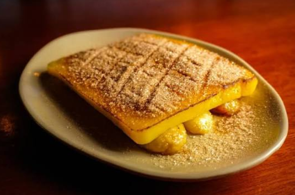
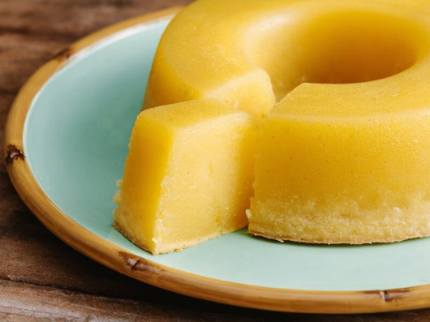
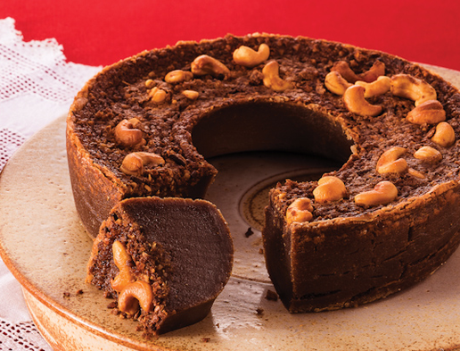

Unidade Recife
Localizada na charmosa região de Boa Viagem, nossa unidade combina a energia de Recife com os sabores mais autênticos do Nordeste. Em um espaço acolhedor e convidativo, oferecemos uma experiência especial para saborear pratos tradicionais como baião de dois e outras delícias regionais. Escolha abaixo para retirada rápida na unidade e aproveite os sabores locais.
Pratos Deliciosos
Cuscuz com Carne de Sol

Cuscuz de milho cozido no vapor, acompanhado de carne de sol desfiada acebolada na manteiga de garrafa e queijo coalho grelhado.
Bolo de Rolo

Bolo de rolo finíssimo com camadas de massa delicada e goiabada cremosa, enrolado e polvilhado com açúcar refinado suave.
Baião de Dois

Arroz com feijão de corda cremoso, misturado a queijo coalho dourado, carne seca desfiada e manteiga de garrafa perfumada.
Bebidas Regionalíssimas
Suco de Pitanga

Suco preparado com polpa vibrante de pitanga colhida em Recife trazendo aroma tropical marcante.
Garapa de Cana

Garapa de cana com limão espremido, trazendo equilíbrio entre doçura natural e frescor irresistível em cada gole.
Suco de Cajá

Suco de cajá feito rico em sabor tropical, bebida naturalmente refrescante e servida bem gelada para alegrar você.
Sobremesas
Cartola Pernambucana

Sobremesa pernambucana feita com banana, queijo, canela e açúcar, combinando sabores marcantes em uma experiência irresistível.
Bolo Souza Leão

Receita tradicional preparada com massa de mandioca, açúcar, manteiga e leite de coco, resultando em textura macia e sabor marcante.
Bolo Pé de Moleque

Decilioso bolo nordestino preparado com massa de mandioca, castanha, manteiga e especiarias, trazendo textura densa e sabor marcante.